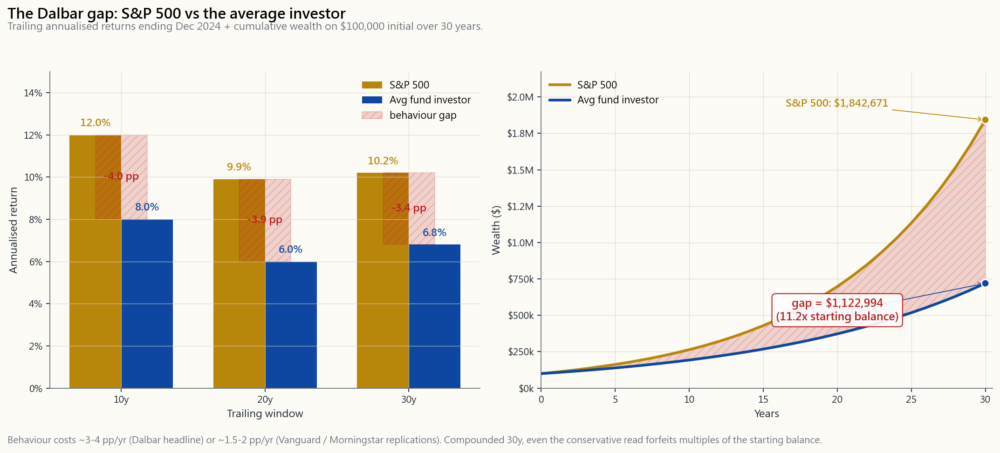
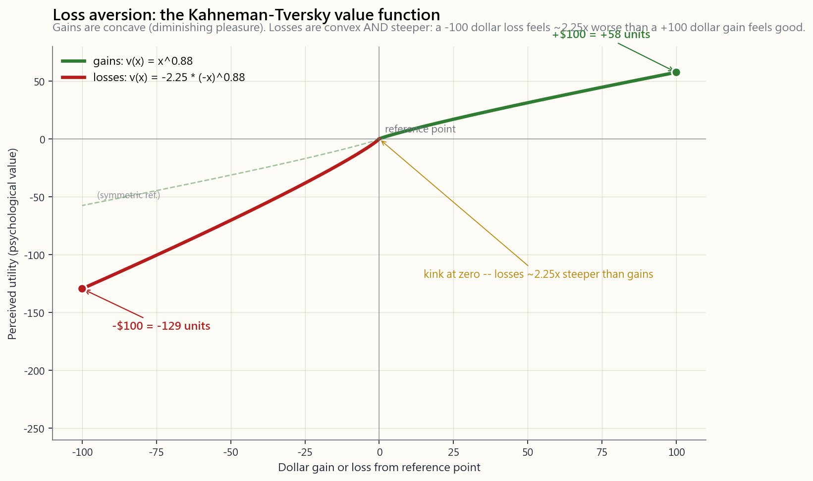

Side Lesson 15: Trading Psychology — The Seven Biases That Bleed Money
1. Why This Is Important
You can run every spreadsheet in this course, you can quote the Sharpe ratio of every factor, you can recite Damodaran's equity-risk premium update from memory — and you can still lose money. The reason is that the keyboard is connected to a biological brain that evolved to keep a primate alive on a savannah, not to underwrite cash-flow risk over thirty years. Trading psychology is the discipline of spotting your own brain's defaults and overriding them with rules. Four reasons to take it seriously:
Dalbar's Quantitative Analysis of Investor Behavior has reported for thirty years that the average equity-fund investor earns 3-5 percentage points per year less than the funds they own. The methodology has been picked apart (Vanguard, Morningstar, and academics have written critiques) — and even the corrected, conservative reads still find a 1.5-2 pp/yr drag from poorly-timed buys and sells. Compounded across a 30-year career on a $100k starting balance, a 3 pp/yr gap turns roughly $1.0M into roughly $400k. The gap pays for someone else's vacation home.
announce itself. You do not feel anchored to your buy price; you feel rational. The whole problem of behavioural finance is that the brain's bugs feel like the brain's normal output. The only defence is structural — pre-commitment, written plans, automation — because in-the-moment introspection is exactly when you cannot trust yourself.
prospect theory, a $100 loss feels roughly twice as bad as a $100 gain feels good (lambda ~ 2.0-2.25). That asymmetry biases every decision: you cut winners early to lock in the good feeling, you hold losers because realising them hurts. You end up with a portfolio of losers — the disposition effect, the most documented bias in retail brokerage data.
stay irrational longer than you can stay solvent. Every bias that blows up an individual blows up more spectacularly when you have leverage, a margin call, or a deadline. Behavioural discipline is not a soft skill; it is the precondition for compounding.
Side 15 lays out the seven biases that do the most damage, gives the counter-measures that actually work, and shows the cumulative wealth gap from buying-and-selling-emotionally on real S&P data.

The interactive lab on the website lets you walk through three scenario decisions — stock down 30% — sell or hold?, *stock up 50% — sell or hold?, missed the rally — chase or wait?* — and read both the rational answer and the typical behavioural answer side by side.
2. What You Need to Know
2.1 Loss Aversion — The 2:1 Asymmetry
Daniel Kahneman and Amos Tversky's 1979 prospect theory paper, and the 1992 cumulative refinement, established the empirical *value function*:
$$ v(x) = \begin{cases} x^{0.88} & x \geq 0 \\ -\lambda \, (-x)^{0.88} & x < 0 \end{cases} $$
The two pieces of that function tell you almost everything about investor behaviour:
- Concave in gains. The pleasure of going from $1,000 to $2,000
- Convex in losses, AND steeper. The pain of losing $100 is

Loss aversion in practice produces three predictable mistakes: holding losers too long (because realising the loss hurts), selling winners too early (the disposition effect), and being too conservative about position sizing right after a drawdown. The fix is not to feel less pain — you can't — but to pre-commit to the sell rule before the loss happens.
2.2 Recency Bias and Performance-Chasing
Recency bias is the brain's habit of weighting the last 12 months as if it were the eternal future. After a year like 2023 (S&P +26%) or 2009 (S&P +27%), retail flows pile into US large-cap. After 2008 (-37%) or 2022 (-18%), retail flows leave. Morningstar's flow data and the Investment Company Institute time-series both show the same pattern: buy-high, sell-low at scale.
The math punishes recency. A simple back-of-envelope: if you switch from cash to equities after a +20% year and switch back to cash after a -20% year, you systematically miss the mean-reversion that follows both extremes. Damodaran's 1928-2024 dataset shows that the five years following a -20% calendar year averaged +14%/yr and the five years following a +30% year averaged +6%/yr. The recency-driven investor catches the wrong tail of every distribution.
2.3 Confirmation Bias and Overconfidence
Confirmation bias is the tendency to seek and over-weight information that supports your existing position, while ignoring or rationalising contrary evidence. You bought TSLA at $400, the price falls to $200, and you find five articles explaining why this is a buying opportunity and zero articles explaining why your thesis is broken. The brain's filter is doing its job — keeping the existing model stable — and the portfolio pays for it.
Overconfidence is the close cousin and gets worse after streaks. A 2001 study by Brad Barber and Terrance Odean (Boys Will Be Boys) showed that men trade 45% more than women and underperform by ~1.4 pp/yr; the gap is mostly explained by overconfidence after winning trades. After a few wins, the brain attributes the wins to skill and the losses to luck — even when the actual ratio is reversed. The fix: pre-trade journalling (write the thesis, the entry, the stop, and the time horizon before pressing the button) so that post-hoc rationalisation has a paper trail to argue against.
2.4 Anchoring, the Disposition Effect, and FOMO
Three closely-related biases that warp the exit decision:
- Anchoring to the buy price. The buy price has zero economic
- Disposition effect. The empirical pattern, documented by
- FOMO and revenge trading. FOMO (fear of missing out) is
2.5 Anchoring's Cousin: The Gambler's Fallacy
The gambler's fallacy is the belief that independent outcomes are due to balance — five red roulette spins in a row "must" be followed by black. In markets, it shows up as: "the S&P has gone up five years in a row, it's due for a crash." The market does not owe you a crash, and prior calendar-year returns have near-zero predictive power on the next calendar year's return (the auto-correlation at the annual horizon is statistically indistinguishable from zero in the 1928-2024 series). Long horizons do mean-revert (10-year forward returns are negatively correlated with 10-year trailing returns at r ~ -0.4) but one-year horizons do not. Sizing trades from "we are due" is a coin-flip dressed up as analysis.
2.6 Behavioural Counter-Measures That Actually Work
The literature is clear: in-the-moment willpower does not work, but structure does. Six counter-measures, ordered by leverage:
the thesis, the entry price, the stop level, the size, and the review date. Sign and date it. The behavioural literature (Ariely, Thaler, Sunstein) is unanimous: commitments made when you are calm bind you when you are emotional. The useful format: one paragraph for the thesis, one number for the size, one number for the stop.
every paycheck. Auto-rebalance the index fund sleeve on a date schedule (quarterly or annually) or a drift-band trigger (rebalance when any sleeve drifts more than 5 pp from target). Automation removes the moment of decision, and the moment of decision is when you make the mistake.
size below 5% of portfolio? correlation to existing positions below 0.7? options assignment understood? tax lot identified? stop-loss set?) catches 80% of impulse trades. Borrow the format from Atul Gawande or the airline industry — the evidence base is the same as for surgery.
a max weekly loss (e.g., 5%). When hit, you flat the active sleeve and walk away from the screen for 24 hours. The kill switch works precisely because it is binary and pre-committed — no judgement call required when you are already tilted.
portfolio, write the thesis today and place the trade tomorrow. 24 hours is enough for most FOMO impulses to dissipate. If the thesis still holds tomorrow, the trade is probably real. If it doesn't, you saved yourself a bad print.
no sector above 25%, no leverage above 2.0x portfolio-wide. These are barbell anchors that keep one bad print from ending the run. From the Kelly literature: even if your edge is real, half-Kelly is empirically optimal because the brain's probability estimates are biased upward.
2.7 The Compound Cost of the Behaviour Gap
Take the conservative end of the academic range: a 2 pp/yr drag from behaviour on a $100,000 starting balance, 30 years, vs an 8%/yr buy-and-hold benchmark. The math:
$$ \text{B\\&H: } \$100{,}000 \cdot 1.08^{30} = \$1{,}006{,}266 $$
$$ \text{Behavioural: } \$100{,}000 \cdot 1.06^{30} = \$574{,}349 $$
The gap is $432,000 — more than four times the starting balance, in forfeited terminal wealth, from a drag that *feels invisible year-to-year*. At the Dalbar headline number of 3-5 pp/yr the gap becomes catastrophic ($1.0M vs ~$330k at 4 pp/yr). The behaviour gap is the single largest fixable cost in retail investing — larger than expense ratios, larger than tax drag (Side 4), larger than fund selection. Fix it first, then optimise everything else.
3. Common Misconceptions
says no. Lab experiments find that more sophisticated investors are if anything more susceptible to overconfidence, because their priors are more strongly held. The fix is structural, not intellectual.
The headline 3-5 pp/yr number is fragile and over-states the gap for the median investor. But every honest replication (Vanguard's "Putting a value on your value", Morningstar's "Mind the Gap" annual study) finds a 1.0-1.7 pp/yr drag from poor timing. The number is real, just smaller than Dalbar prints. At 1 pp/yr over 30 years that is still a $200k loss on $100k starting.
aversion makes you more aggressive on losing positions (you refuse to sell, you double-down to recover) and more conservative on winning positions (you book the gain to lock in the good feeling). It distorts both sides asymmetrically.
reduces some biases (gambler's fallacy, base-rate neglect) but amplifies others (overconfidence, confirmation bias). Knowing you have a bias does not protect you from acting on it in real time. Pre-commitment does.
sum wins."* Dollar-cost averaging is consciously* trading 0.5-0.7 pp/yr of expected return (per Vanguard's 2012 / 2023 studies) for guaranteed removal of regret risk. If the alternative is "stare at the lump sum, panic, and never deploy," DCA's expected-value loss is small relative to the expected-value loss of doing nothing. Behavioural insurance has a price.
individual stocks can be helpful if you size them at 2-3 ATR (well outside daily noise). Stop-losses on index funds are destructive because indexes mean-revert. The right tool for index exposure is position sizing, not stops — keep the index sleeve small enough that you can hold through a 50% drawdown without capitulating.
bias."** It is a real bias. Brain-imaging studies show that the loss-of-money signal activates the same threat regions as physical pain, and the limbic response biases toward immediate risk-seeking. The brain is engineered to chase losses; calling it bad discipline is like calling fight-or-flight bad discipline. The fix is the kill switch, not willpower.
FOMO is not that the rally is fake — sometimes it isn't. The problem is that you size the position by the strength of the feeling, not by the strength of the evidence. A real rally with a sized-too-large position becomes the next drawdown disaster.
needle."** Self-reported and brokerage-paired studies disagree. Investors who keep a written trade journal show measurably smaller behaviour gaps in the follow-up data. The mechanism is not the journaling itself — it is that journaling forces pre-trade pre-commitment.
investors are immune."** Wrong. The Dalbar gap is largest in active fund flows, but the same study shows a 1-2 pp/yr gap even among index-fund investors who panic-sell during drawdowns. The vehicle is not the protection; the behaviour is.
4. Q&A Section
**Q1. If loss aversion is hard-wired, what's the point of learning about it?** You can't turn it off, but you can route around it. Pre-commitment (write the stop before you enter), automation (rebalance on a schedule, not on a feeling), and position sizing (small enough that a loss isn't existential) all attack the consequences of loss aversion without requiring you to feel less pain. The brain stays broken; the portfolio is fine.
Q2. How big is the behaviour gap in dollars? Conservative (1.5 pp/yr) on $100k starting, 30y, 8% benchmark: ~$1.0M vs ~$650k → $350k forfeited. Aggressive (4 pp/yr per Dalbar): ~$1.0M vs ~$330k → $670k forfeited. Either way, larger than any other fixable cost in retail investing.
Q3. What's the single most useful behavioural counter-measure? Automation — specifically, paycheck-deducted contributions to an IRA / 401(k). It removes the decision moment entirely. Every other counter-measure (checklists, journals, kill switches) is incremental; automation is structural.
Q4. Should I check my portfolio less often? Yes. The behavioural finance literature broadly finds that more frequent portfolio checking → more loss-realisation pain (loss-aversion fires) → more bad trades. Quarterly is enough for most retail investors. Daily is actively harmful.
Q5. The Dalbar number is suspect — should I ignore the behaviour gap? No. The number is suspect at 4-5 pp/yr; it is robustly defensible at 1-2 pp/yr. Even at the conservative end the cost over 30 years is multiples of the starting balance. The fix is the same regardless of the exact magnitude.
**Q6. How do I handle a position that's down 30% and I think the thesis is still right?** Re-read the original written thesis (you wrote one — see §2.6). If the thesis is intact and the size is below 5% of the portfolio, hold. If the thesis broke (the company missed earnings, the catalyst evaporated, the risk you didn't anticipate showed up), sell — even at the 30% loss. The buy price is irrelevant; the forward expected return is everything.
**Q7. What's the difference between conviction and confirmation bias?** Conviction is a position you hold *while actively looking for disconfirming evidence* and updating your sizing on what you find. Confirmation bias is the position you hold *while filtering out disconfirming evidence*. The test: can you state, in writing, the specific data point that would make you sell? If yes, conviction. If no, bias.
Q8. Are kill switches realistic for retail investors? Yes — but easier with brokerages that let you pre-set them (IBKR, ThinkOrSwim). Manual kill switches require more discipline ("if my account is down 5% this week, I close all active positions on Monday morning"), but they are still better than nothing. Pre-committed in writing, reviewed weekly.
Q9. How does the irrational-longer-than-solvent rule relate to all this? That rule — *the market can stay irrational longer than you can stay solvent* — is the meta-rule. Every behavioural bias gets amplified by leverage and by deadlines. If your time horizon is 30 years and you have no leverage, you can survive your own brain. If you have 3:1 leverage and a margin clock, your brain's biases will compound into a forced liquidation before the thesis is right. Strict position sizing is the cheapest behavioural insurance you can buy.
Q10. What role does meditation / breathwork play? Marginal but non-zero. The mechanism, where it works, is reducing the amplitude of the limbic response to a loss — so the kill switch fires before the revenge trade. It is a complement to structural counter-measures, not a substitute. If you have to choose: write the thesis first, breathe second.
**Q11. Can I just hire someone to manage this for me to avoid the biases?** Partially. A fee-only fiduciary advisor at 0.5-1.0%/yr is buying you one counter-measure — the friction of having to call them before trading. Worth it for some people, not for others. Robo-advisors at 0.25%/yr buy you automation (the most useful counter-measure) without the human friction. Either is better than self-managing without a structure.
Q12. What's the one thing I should do tomorrow? Set up a paycheck-deducted IRA / 401(k) contribution at the highest amount you can afford, automatically rebalanced annually. Everything else in this lesson is incremental compared to that one structural change. Automate the contribution; the contribution is the trade you can never time wrong.
附加課程 15：交易心理學——七大蠶食金錢的偏誤
1. 為何這至關重要
你可以把本課程的每一張試算表都做完，可以背出每個因子的夏普比率，可以把 Damodaran 的股票風險溢價最新數據倒背如流——但你仍然可能虧錢。原因在於，鍵盤背後連接的是一個生物大腦，這個大腦進化的目的是讓靈長類動物在草原上存活，而非為三十年的現金流風險進行核算。交易心理學是一門學科，旨在識別大腦的預設反應，並以規則加以凌駕。以下四個理由，說明為何必須認真對待：
附加課程 15 列出七種損害最大的偏誤，提供真正有效的對策，並以真實標普500數據展示出因情緒化買賣所造成的累計財富差距。
網站上的互動實驗室讓你逐一走過三個情境決策——股票下跌 30%——賣出還是持有？、股票上漲 50%——賣出還是持有？、錯過反彈——追入還是等待？——並可並排閱讀理性答案與典型行為答案。
2. 你需要掌握的內容
2.1 損失厭惡——2:1 的不對稱性
Daniel Kahneman 與 Amos Tversky 在 1979 年發表的前景理論論文，以及 1992 年的累積修正版，確立了實證性的價值函數：
$$ v(x) = \begin{cases} x^{0.88} & x \geq 0 \\ -\lambda \, (-x)^{0.88} & x < 0 \end{cases} $$
這個函數的兩個部分，幾乎道盡了投資者行為的一切：
- 獲利段呈凹形。 從 1,000 美元漲至 2,000 美元的愉悅感，大於從 10,000 美元漲至 11,000 美元的愉悅感，儘管獲利金額相同。這是邊際效用遞減的體現。
- 損失段呈凸形，且斜率更陡。 損失 100 美元的痛苦，大約是賺到 100 美元的愉悅的兩倍（在大多數複製研究中，λ 約為 2.0 至 2.25）。零點附近的扭折，正是市場發生崩盤的根本原因——沒有人願意認賠，直到所有人同時決定認賠。
損失厭惡在實踐中會產生三種可預測的錯誤：持有虧損倉位過長（因為認賠出場很痛苦）、過早賣出盈利倉位（即處置效應），以及在回撤後對倉位規模過於保守。解決辦法並非讓自己少感受痛苦——這是做不到的——而是在損失發生之前就預先承諾好止蝕規則。
2.2 近因偏誤與追逐表現
近因偏誤是大腦將過去 12 個月的表現視為永恆未來的習慣。在 2023 年（標普 500 +26%）或 2009 年（標普 500 +27%）之後，散戶資金蜂擁湧入美國大型股。在 2008 年（-37%）或 2022 年（-18%）之後，散戶資金又紛紛撤離。晨星的資金流向數據及投資公司協會的時間序列數據，均呈現出相同的規律：高買低賣，周而復始，規模龐大。
近因偏誤讓數學懲罰你。一個簡單的估算：若你在上漲 20% 之後將資金由現金轉入股票，又在下跌 20% 之後由股票轉回現金，你便系統性地錯失了兩個極端之後的均值回歸。Damodaran 的 1928 至 2024 年數據集顯示，在日曆年度下跌 20% 之後的五年，平均年回報率為 +14%；在日曆年度上漲 30% 之後的五年，平均年回報率僅為 +6%。受近因偏誤驅動的投資者，每次都站在分布的錯誤一端。
2.3 確認偏誤與過度自信
確認偏誤是指傾向於尋找並過度重視支持現有倉位的資訊，同時忽視或合理化相反的證據。你以 400 美元買入某科技股，股價跌至 200 美元，你卻發現了五篇解釋這是買入良機的文章，卻找不到一篇說明你的投資論據已動搖的文章。大腦的過濾機制正在發揮作用——維持現有模型的穩定——而投資組合為此付出代價。
過度自信是確認偏誤的近親，且在連勝後會更加嚴重。Brad Barber 與 Terrance Odean 在 2001 年的研究（Boys Will Be Boys）顯示，男性的交易頻率比女性高 45%，年回報率卻低約 1.4 個百分點；這個差距主要源於在盈利交易後的過度自信。在連贏數次後，大腦會將盈利歸因於能力，將虧損歸因於運氣——即使實際比例恰恰相反。對策：在入市前記錄交易日誌（在按下按鈕之前，寫下投資論據、入市價、止蝕位及持倉時間），讓事後的合理化有書面記錄可供反駁。
2.4 錨定效應、處置效應與 FOMO
三種密切相關的偏誤，扭曲了離場決策：
- 錨定於買入價。 買入價對任何人而言都沒有經濟意義，除了你的稅務申報表之外。市場不知道你付了多少錢。但你的大腦把「我以 80 美元買入」視為一個神奇的參考點——高於 80 美元是賺錢，低於 80 美元是虧損。正確的參考點是從現在起的預期回報，而不是「我有沒有回本」。若有人今天把這個倉位作為禮物送給你，且沒有任何成本基礎，你會持有嗎？若否，就賣出。
- 處置效應。 這一實證規律由 Hersh Shefrin 和 Meir Statman 在 1985 年記錄，並在此後的每一個散戶經紀數據集中得到複製：投資者實現盈利的頻率，約是實現同等規模虧損頻率的 1.5 倍。結果是，投資組合平均而言持有的，是自買入以來股價已下跌的股票——這是最糟糕的選股機制。
- FOMO 與報復性交易。 FOMO（害怕錯過）是近因偏誤偽裝成機會的樣子：市場在三個月內上漲 30%，你沒有參與，於是追入，反彈見頂，你承受了回撤。報復性交易是更嚴重的變體——在虧損之後建立更大的倉位以圖「扳回」，這會將一個可控的回撤演變成災難性的損失。換言之：你沒有資格與市場談判。
2.5 錨定效應的近親：賭徒謬誤
賭徒謬誤是指相信獨立結果必然會趨於平衡——輪盤連續出現五次紅色，「下一次必定」出現黑色。在市場上，這種思維表現為：「標普 500 已連續上漲五年，是時候崩盤了。」市場不欠你一次崩盤，而且過往的日曆年度回報對下一年度的回報幾乎毫無預測力（在 1928 至 2024 年的數據系列中，年度自相關性在統計上與零無異）。長周期確實存在均值回歸（10 年期遠期回報與 10 年期歷史回報的相關係數約為 -0.4），但一年期並不如此。以「我們是時候了」為由來調整倉位規模，不過是把擲硬幣包裝成分析。
2.6 真正有效的行為對策
研究文獻的結論十分清晰：臨時依靠意志力行不通，但結構管用。以下六項對策，按效力由高至低排列：
2.7 行為缺口的複利成本
取學術界保守估計的下限：行為造成每年 2 個百分點的拖累，初始本金 10 萬美元，持續 30 年，對比年回報率 8% 的買入持有基準。計算如下：
$$ \text{買入持有：} \$100{,}000 \cdot 1.08^{30} = \$1{,}006{,}266 $$
$$ \text{行為拖累：} \$100{,}000 \cdot 1.06^{30} = \$574{,}349 $$
差距為 432,000 美元——超過初始本金的四倍，是因行為拖累而損失的最終財富，而這種拖累在逐年感受上幾乎是隱形的。若按照 Dalbar 的 3 至 5 個百分點的數字計算，差距將更為驚人（以每年 4 個百分點計，100 萬美元 vs 約 33 萬美元）。行為缺口是散戶投資中最大的可修復成本——遠大於開支比率、稅務拖累（附加課程 4）及基金選擇。先解決這個問題，再優化其他一切。
3. 常見誤解
4. 問答環節
問 1：如果損失厭惡是天生的，學習它有何意義？ 你無法關閉它，但你可以繞過它。預先承諾（在入市前寫好止蝕位）、自動化（按計劃再平衡，而非憑感覺）以及倉位規模管理（規模小到一次虧損不會動搖根本），都是在不需要你減少痛苦感的前提下，攻擊損失厭惡後果的方法。大腦依然運作如故；投資組合一切安好。
問 2：行為缺口以金額計算有多大？ 保守估計（每年 1.5 個百分點），10 萬美元起始本金，30 年，8% 基準回報：約 100 萬美元 vs 約 65 萬美元，損失約 35 萬美元。激進估計（Dalbar 的每年 4 個百分點）：約 100 萬美元 vs 約 33 萬美元，損失約 67 萬美元。無論如何，都是散戶投資中最大的可修復成本。
問 3：最有用的單一行為對策是什麼？ 自動化——具體而言，是每個薪資發放日自動扣款存入退休賬戶。這完全消除了決策的時刻。其他所有對策（清單、日誌、熔斷機制）都是錦上添花；自動化是結構性的改變。
問 4：我應該少看我的投資組合嗎？ 是的。行為金融學的文獻普遍發現，查看投資組合的頻率越高，觸發損失厭惡的次數越多，進而導致更多糟糕的交易。對大多數散戶投資者而言，每季看一次就足夠了。每天看是有害的。
問 5：Dalbar 的數字值得懷疑——我應該忽略行為缺口嗎？ 不。每年 4 至 5 個百分點的數字確實值得懷疑；每年 1 至 2 個百分點的數字則有充分的實證支持。即使取保守估計，30 年下來的代價也是初始本金的數倍。無論確切數字如何，解決方法是相同的。
問 6：如何處理一個下跌了 30%、但我認為投資論據仍然成立的倉位？ 重新閱讀原來的書面投資論據（你寫了的——見 §2.6）。如果論據完整，且倉位規模低於投資組合的 5%，持有。如果論據已動搖（公司業績失誤、催化因素消失、預料之外的風險出現），賣出——即使虧損 30%。買入價是無關緊要的；未來的預期回報才是一切。
問 7：確信與確認偏誤有何區別？ 確信是指在主動尋找反駁證據的同時持有倉位，並根據發現調整規模。確認偏誤是指在過濾掉反駁證據的情況下持有倉位。測試方法：你能否以書面形式說出，哪一個具體數據會讓你賣出？若能，這是確信。若不能，這是偏誤。
問 8：熔斷機制對散戶投資者來說是否實際可行？ 是的——但在允許預設的經紀商（如盈透證券、ThinkOrSwim）上更容易操作。手動熔斷機制需要更多紀律（「如果我的賬戶這週下跌 5%，我在週一早上平掉所有主動倉位」），但仍然比什麼都沒有要好。以書面形式預先承諾，每週覆盤。
問 9：「市場保持非理性的時間比你保持償債能力的時間更長」這條規則與這一切有何關係？ 這條規則是元規則。每一種行為偏誤都會被槓桿和截止期限放大。如果你的時間跨度是 30 年，且沒有槓桿，你可以承受自己大腦帶來的後果。如果你有 3 倍槓桿且面臨追繳保證金的壓力，你大腦的偏誤將在論據被驗證之前複利疊加成被迫平倉。嚴格的倉位規模管理是你能購買的最便宜的行為保險。
問 10：冥想 / 呼吸練習有什麼作用？ 作用有限但不為零。在有效的情況下，其機制是降低邊緣系統對虧損反應的強度——讓熔斷機制在報復性交易之前觸發。它是結構性對策的補充，而非替代品。如果必須二選一：先寫投資論據，再做呼吸練習。
問 11：我可以僱人幫我管理，以避免這些偏誤嗎？ 在一定程度上可以。收費型信託顧問每年收費 0.5 至 1.0%，讓你在交易前需要打電話給他們，這本身就是一種阻力。對某些人有效，對其他人則不然。自動化投顧每年收費 0.25%，提供自動化服務（最有用的對策），而沒有人工阻力。任何一種都優於在沒有結構的情況下自行管理。
問 12：我明天應該做的一件事是什麼？ 以你能承受的最高金額，設置每個薪資發放日自動扣款存入退休賬戶，並設定每年自動再平衡。這一課中的其他所有內容，與這一個結構性改變相比都是次要的。自動化這筆定期投入；這是你永遠不會選錯時機的那筆交易。
補充課程 15：交易心理學——七種讓你持續虧損的認知偏誤
1. 為什麼這很重要
你可以跑完本課程裡的每一張試算表，可以說出每個因子的夏普比率，可以背誦 Damodaran 最新的股票風險溢酬更新——然後你還是可能虧錢。原因在於，敲鍵盤的人連接著一顆生物大腦，這顆大腦演化的目的是讓靈長類在草原上存活，而不是承擔三十年的現金流量折現法風險。交易心理學是一門學科，目的是找出你自己大腦的預設模式，並用紀律加以覆蓋。以下四個理由值得你認真對待：
補充課程 15 整理了造成最大損害的七種認知偏誤，提供實際有效的對抗措施，並透過真實標普 500 數據呈現情緒化買賣所導致的累積財富差距。
網站上的互動實驗室讓你逐一體驗三個情境決策——股票下跌 30%——賣出還是持有？、股票上漲 50%——賣出還是持有？、錯過漲勢——追買還是等待？——並可並排閱讀理性答案和典型行為答案。
2. 你必須掌握的知識
2.1 損失趨避——2:1 的不對稱性
Daniel Kahneman 與 Amos Tversky 於 1979 年發表的展望理論論文，以及 1992 年的累積展望理論修訂版，建立了實證的價值函數：
$$ v(x) = \begin{cases} x^{0.88} & x \geq 0 \\ -\lambda \, (-x)^{0.88} & x < 0 \end{cases} $$
這個函數的兩段幾乎告訴了你關於投資人行為的一切：
- 獲利側呈凹型。 從 1,000 美元增加到 2,000 美元的喜悅，大於從 10,000 美元增加到 11,000 美元的喜悅，儘管美元獲利完全相同。這是邊際效用遞減的概念。
- 損失側呈凸型，且斜率更陡。 損失 100 美元的痛苦，大約是獲得 100 美元的喜悅的兩倍（大多數複製研究中 λ 約為 2.0 至 2.25）。零點處的扭折是市場崩盤的根本原因——沒有人想認賠，直到所有人同時決定認賠。
損失趨避在實務中會產生三種可預測的錯誤：持有虧損部位過久（因為認賠太痛苦）、過早賣出獲利部位（即處置效應），以及在最大回撤之後對部位規模過於保守。解方不是去感受更少的痛苦——你做不到——而是在虧損發生之前，預先承諾賣出的規則。
2.2 近期偏誤與績效追逐
近期偏誤是大腦習慣將過去 12 個月的經歷當作永恆未來來加權的傾向。在 2023 年（標普 500 上漲 26%）或 2009 年（標普 500 上漲 27%）之後，散戶資金大量湧入美國大型股。在 2008 年（下跌 37%）或 2022 年（下跌 18%）之後，散戶資金大量撤出。晨星的資金流向數據和投資公司協會的時間序列數據都呈現相同的模式：高買低賣，而且規模龐大。
數學上，近期偏誤必然招致懲罰。簡單估算：如果你在某個上漲 20% 的年度之後從現金轉換成股票，又在某個下跌 20% 的年度之後切換回現金，你系統性地錯過了兩個極端之後的均值回歸行情。Damodaran 的 1928 至 2024 年數據集顯示，在下跌 20% 的年度之後的五年，平均年化報酬率為 +14%；在上漲 30% 的年度之後的五年，平均年化報酬率為 +6%。受近期偏誤驅動的投資人，總是站在每個分佈的錯誤那一端。
2.3 確認偏誤與過度自信
確認偏誤是一種傾向，讓人傾向尋找並過度重視支持既有部位的資訊，同時忽略或合理化反面證據。你在 400 美元買進 TSLA，股價跌到 200 美元，你找到五篇文章解釋為何這是買進良機，卻找不到一篇文章說明你的投資論點已經破裂。大腦的過濾機制正在盡職地工作——維持現有模型的穩定——而投資組合為此付出代價。
過度自信是確認偏誤的近親，且在連勝之後會更加惡化。Brad Barber 與 Terrance Odean 在 2001 年的研究（Boys Will Be Boys）顯示，男性的交易頻率比女性高 45%，年化報酬率落後約 1.4 個百分點；這個差距主要由過度自信解釋。幾次獲利之後，大腦會把勝利歸因於技巧，把虧損歸因於運氣——即使實際的比例完全相反。解方：交易前記錄日誌（在按下按鈕之前，寫下投資論點、進場價、停損點和持有期間），讓事後合理化有一份書面記錄可以反駁。
2.4 錨定效應、處置效應與 FOMO
三種密切相關的認知偏誤，都會扭曲出場決策：
- 錨定在買進價格。 買進價格對任何人都沒有經濟意義，除了你的報稅表。市場不知道你當初付了多少錢。但你的大腦卻把「我在 80 美元買進」視為神奇的參考點——80 美元以上是綠色，以下是紅色。正確的參考點應該是從現在起的未來預期報酬，而不是「我回本了嗎？」。如果今天有人把這個部位當禮物送給你，不附帶任何成本基礎，你會持有嗎？如果不會，就賣掉。
- 處置效應。 這個實證規律最早由 Hersh Shefrin 與 Meir Statman 於 1985 年記錄，並在此後每一個散戶券商數據集中得到複製：投資人認賺的頻率約為認賠等額虧損的 1.5 倍。結果是，一個投資組合平均而言是由自買進以來下跌的股票所組成——這是最糟糕的選股機制。
- FOMO 與報復性交易。 FOMO（害怕錯過）是偽裝成機會的近期偏誤：市場在三個月內上漲 30% 卻沒帶上你，你追漲買進，多頭行情見頂，你承受回撤。報復性交易是雙重破碎的近親——在虧損後立刻加大部位以「追回損失」，這會把可控的回撤轉變成災難性的崩潰。換句話說：你無法和市場談判。
2.5 錨定效應的近親：賭徒謬誤
賭徒謬誤是相信獨立事件「應該」趨於平衡——輪盤連續出現五次紅色，「一定」接下來是黑色。在市場中，它的表現形式是：「標普 500 已經連漲五年，該跌了。」市場不欠你一次崩盤，而且過去的年度報酬對下一個年度的報酬幾乎沒有預測能力（1928 至 2024 年數據中，年度自我相關係數在統計上與零無異）。長期確實存在均值回歸（10 年未來報酬與 10 年過去報酬的相關係數 r 約為 -0.4），但一年期並不存在。以「時機到了」作為交易依據，不過是把擲硬幣包裝成分析。
2.6 真正有效的行為對抗措施
學術文獻的結論很清楚：當下依靠意志力沒用，但結構有用。以下六種對抗措施，按影響力排列：
2.7 行為落差的複利成本
取學術研究範圍的保守估計：行為導致的每年 2 個百分點拖累，初始本金 10 萬美元，持有 30 年，對照年化 8% 的買進持有基準。計算如下：
$$ \text{買進持有：} \$100{,}000 \cdot 1.08^{30} = \$1{,}006{,}266 $$
$$ \text{行為投資人：} \$100{,}000 \cdot 1.06^{30} = \$574{,}349 $$
差距為 432,000 美元——超過初始本金的四倍，這是以一種年復一年感覺不到的拖累，換來的終值損失。若以 Dalbar 的頭條數字 3 至 5 個百分點計算，差距更加驚人（100 萬美元 vs. 4 個百分點下的約 33 萬美元）。行為落差是散戶投資中最大的可修正成本——大於費用率、大於稅務拖累（補充課程 4），也大於基金選擇。先修正它，再優化其他一切。
3. 常見迷思
4. 問答環節
Q1. 如果損失趨避是天生的，學這些有什麼意義？ 你無法關閉它，但你可以繞過它。預先承諾（進場前先寫好停損）、自動化（按計畫再平衡，而非按感覺）和部位規模控制（小到一次虧損不會讓你傾家蕩產），都是在不要求你感受更少痛苦的前提下，攻擊損失趨避的後果。大腦保持故障；投資組合安然無恙。
Q2. 行為落差有多少美元？ 保守估計（每年 1.5 個百分點），初始 10 萬美元，30 年，8% 基準：約 100 萬美元 vs. 約 65 萬美元，損失 35 萬美元。激進估計（Dalbar 的每年 4 個百分點）：約 100 萬美元 vs. 約 33 萬美元，損失 67 萬美元。無論如何，都是散戶投資中最大的可修正成本。
Q3. 單一最有效的行為對抗措施是什麼？ 自動化——具體而言，是每次發薪自動扣款存入個人退休帳戶和 401(k)。它完全消除了決策時刻。其他所有對抗措施（檢查清單、日誌、熔斷機制）都是累進式的；自動化是結構性的。
Q4. 我應該減少查看投資組合的頻率嗎？ 是的。行為財務學文獻普遍發現，查看投資組合越頻繁 → 承受認賠痛苦越多（損失趨避啟動）→ 做出越多糟糕交易。對大多數散戶投資人來說，每季查看一次就足夠了。每天查看是積極有害的。
Q5. Dalbar 的數字有疑問——我該忽略行為落差嗎？ 不。4 至 5 個百分點的數字有疑問；但 1 至 2 個百分點在各種複製研究中都具有強健性。即使在保守估計的範圍內，30 年的成本也是初始本金的數倍。無論確切數字是多少，解方都是一樣的。
Q6. 我有一個部位跌了 30%，但我認為投資論點仍然成立，該怎麼辦？ 重新閱讀最初的書面論點（你應該有寫——見第 2.6 節）。如果論點完好，且部位低於投資組合的 5%，繼續持有。如果論點已破裂（公司盈餘不如預期、催化劑消失、你未預料到的風險出現了），就賣出——即使是在虧損 30% 的情況下。買進價格無關緊要；未來的預期報酬才是一切。
Q7. 信念與確認偏誤有什麼區別？ 信念是一個你在主動尋找反面證據的同時持有的部位，並根據你的發現調整部位規模。確認偏誤是你在過濾反面證據的同時持有的部位。測試方法：你能否以書面形式說明，哪一個具體數據點會讓你賣出？如果能，那是信念。如果不能，那是偏誤。
Q8. 熔斷機制對散戶投資人來說實際嗎？ 可以——但在允許預設停損的券商（如 IBKR、ThinkOrSwim）上更容易實施。手動熔斷機制需要更多紀律（「如果我的帳戶本週虧損 5%，我在週一早上平掉所有主動部位」），但仍然比沒有好。以書面預先承諾，每週檢視。
Q9. 「市場維持非理性的時間比你維持償債能力更長」這條規則和這些有什麼關係？ 這條規則是元規則。每一種行為偏誤都會被槓桿和截止日期放大。如果你的時間視野是 30 年且沒有槓桿，你可以撐過自己的大腦。如果你有 3 倍槓桿且面臨追繳保證金的壓力，你的大腦偏誤會複利成一次強制清算，發生在你的論點得到驗證之前。嚴格的部位規模控制，是你能買到的最便宜的行為保險。
Q10. 冥想和呼吸練習有什麼作用？ 邊際效果存在，但不顯著。在有效的情況下，其機制是降低大腦對損失的邊緣反應幅度——讓熔斷機制在報復性交易發生之前先啟動。它是結構性對抗措施的補充，而非替代品。如果你必須二選一：先寫下投資論點，再去呼吸。
Q11. 我能不能乾脆雇人來幫我管，避開這些偏誤？ 部分可以。收費 0.5 至 1.0%/年的純收費受託理財顧問，為你購買的是一種對抗措施——在交易前需要打電話給他們的摩擦成本。對某些人值得，對其他人未必。收費 0.25%/年的機器人理財平台，為你購買的是自動化（最有效的對抗措施），但沒有人為摩擦。兩者都比在沒有任何結構的情況下自行管理要好。
Q12. 明天我應該做的一件事是什麼？ 以你能負擔的最高金額，設立每次發薪自動扣款存入個人退休帳戶和 401(k) 的機制，並設定每年自動再平衡。這一個結構性改變，比本課程的其他所有內容加總影響都更大。自動化這筆定期投入；這是那筆你永遠無法在錯誤時機進行的交易。
补充课15：交易心理学——七大亏钱偏误
1. 为何此课至关重要
你可以运用本课程中的每一张电子表格，可以报出每个因子的夏普比率，可以背诵达摩达兰最新发布的股权风险溢价数据——但你依然可能亏钱。根本原因在于：敲击键盘的是一个经过漫长进化的生物大脑，它的使命是让灵长类动物在草原上活下去，而非在三十年的跨度内承担现金流折现法风险。交易心理学的意义，在于识别大脑的默认模式，并用规则加以覆盖。以下四点，值得认真对待：
达尔巴（Dalbar）的《投资者行为量化分析》报告连续三十年显示：普通股票型基金投资者每年获得的收益，比其持有基金的实际收益低3至5个百分点。该报告的研究方法受到了广泛批评——先锋（Vanguard）、晨星（Morningstar）及学术界均有质疑——但即便采用修正后的保守估算，因买卖时机不当造成的拖累仍有每年1.5至2个百分点。以10万美元初始本金计算，在30年投资周期内，每年3个百分点的差距，会将约100万美元的终值压缩至约40万美元。这笔差额，足够给别人买一套度假别墅。
补充课15将梳理危害最大的七种偏误，提供经过验证的应对措施，并通过真实标普500数据，展示情绪化买卖与长期坚守所产生的累积财富差距。
网站上的互动实验室将带你经历三个情景决策——股票下跌30%——卖还是持有？、股票上涨50%——卖还是持有？、错过反弹——追涨还是等待？——并将理性答案与典型行为答案并排呈现，供你对比参考。
2. 核心知识要点
2.1 损失厌恶——2:1的不对称性
丹尼尔·卡尼曼与阿莫斯·特沃斯基于1979年发表的前景理论论文，以及1992年的累积版修正，确立了经验性的价值函数：
$$ v(x) = \begin{cases} x^{0.88} & x \geq 0 \\ -\lambda \, (-x)^{0.88} & x < 0 \end{cases} $$
该函数的两段，几乎解释了投资者行为的全部逻辑：
- 收益区间呈凹形。 从1,000美元增至2,000美元的快感，大于从10,000美元增至11,000美元的快感，尽管美元收益完全相同。这是边际效用递减规律。
- 损失区间呈凸形，且斜率更陡。 损失100美元的痛苦，约为获得100美元快感的两倍（在大多数复现研究中，λ约为2.0至2.25）。零点处的拐折，正是市场发生崩盘的根本原因——没有人愿意认亏，直到所有人同时决定认亏。
损失厌恶在实践中会产生三种可预见的错误：持有亏损仓位过久（因为认亏太痛苦）、过早卖出盈利仓位（即"处置效应"），以及在回撤后对仓位规模过于保守。解决之道不是感受更少的痛苦——你做不到——而是在损失发生之前就预先设定好卖出规则。
2.2 近期偏误与追涨杀跌
近期偏误是大脑将过去12个月的经历当作永恒未来的习惯。经历了2023年（标普+26%）或2009年（标普+27%）这样的年份后，散户资金大量涌入美国大盘股。经历了2008年（-37%）或2022年（-18%）之后，资金便纷纷撤离。晨星的资金流数据和投资公司协会的时间序列均呈现相同规律：在宏观层面上，买高卖低。
从数学角度看，近期偏误的代价是惨重的。一个简单的粗略测算：若你在大涨20%之后从现金转向股票，又在大跌20%之后重返现金，你便系统性地错过了两个极端之后的均值回归。达摩达兰1928年至2024年的数据集显示，历年大跌20%之后的五年，年均回报约+14%；历年大涨30%之后的五年，年均回报仅+6%。受近期偏误驱动的投资者，总是接住每个分布的错误尾巴。
2.3 确认偏误与过度自信
确认偏误是指倾向于寻找并过度重视支持自身既有立场的信息，同时忽视或强行解释反驳性证据。你在400美元时买入特斯拉，股价跌至200美元，你却能找到五篇文章解释这是绝佳买入机会，却找不到一篇文章质疑你的逻辑。大脑的过滤机制在尽职尽责——维持现有认知模型的稳定——而代价由投资组合来承担。
过度自信是确认偏误的近亲，且在连续盈利后会进一步恶化。布拉德·巴伯与特伦斯·奥迪恩2001年的研究（Boys Will Be Boys）显示，男性的交易频率比女性高45%，年化表现低约1.4个百分点；这一差距主要源于连续盈利后的过度自信。在连赢几次之后，大脑会将盈利归因于能力，将亏损归因于运气——即便实际上恰好相反。应对之法：交易前记录（在按下确认键之前，写下投资逻辑、买入点、止损位和持有周期），让事后的合理化叙事有一份书面记录来反驳。
2.4 锚定效应、处置效应与FOMO
三种密切相关的偏误，共同扭曲了退出决策：
- 锚定于买入价。 你的买入价，除了在税单上，对任何人都没有任何经济意义。市场不知道你的成本。但你的大脑将"我在80美元买的"当作一条神奇的基准线——高于80美元是绿色，低于80美元是红色。真正的参考基准应该是从当前价格出发的远期预期收益，而不是"我回本了吗"。如果今天有人把这个仓位免费赠送给你、没有任何成本，你愿意持有吗？如果不愿意，就卖。
- 处置效应。 由赫什·谢夫林与梅尔·斯塔特曼于1985年记录的实证规律，并在此后每一份散户经纪数据集中得到复现：投资者实现盈利的频率，约是实现等额亏损频率的1.5倍。结果是，投资组合平均而言是一堆买入以来价格下跌的股票——这是最糟糕的选股机制。
- FOMO与报复性交易。 FOMO（错失恐惧）是披着机会外衣的近期偏误：市场在你场外观望时三个月涨了30%，你追进去，反弹见顶，你承受回撤。报复性交易是双重受损的变体——在亏损后立即加大仓位想"扳回来"，将一个可控的回撤变成灾难性的崩溃。换句话说：你无法与市场谈判。
2.5 锚定效应的近亲：赌徒谬误
赌徒谬误是相信独立事件"应该"趋向平衡——连续五次轮盘赌出现红色，"必然"下一次是黑色。在投资中，表现为："标普500已经连涨五年，该崩了。"市场不欠你一次崩盘，而且历年回报的自相关性在1928年至2024年的年度数据中，统计上与零无异。长周期确实存在均值回归（10年远期收益与10年历史收益的相关系数约为-0.4），但1年期不存在。基于"该到了"来调整仓位，不过是把掷硬币包装成了分析。
2.6 真正有效的行为应对措施
研究结论清晰明确：依靠当下的意志力毫无用处，但结构有效。以下六种应对措施按影响力大小排序：
2.7 行为差距的复利代价
取学术研究的保守估算：每年2个百分点的行为拖累，初始本金10万美元，持有30年，基准为年化8%的买入持有策略。数学如下：
$$ \text{买入持有：} \$100{,}000 \cdot 1.08^{30} = \$1{,}006{,}266 $$
$$ \text{行为投资者：} \$100{,}000 \cdot 1.06^{30} = \$574{,}349 $$
差距为43.2万美元——超过初始本金的四倍，是因行为拖累造成的终值损失，而这种拖累在逐年感知上几乎是隐形的。若按达尔巴报告的3至5个百分点计算，差距将更为惨烈（4个百分点时：100万美元对比约33万美元）。行为差距是散户投资中单项可修复成本里最大的一项——超过费用率，超过税务拖累（补充课4），也超过基金选择的影响。先修复它，再优化其他一切。
3. 常见误解
4. 问答环节
Q1. 如果损失厌恶是写进基因的，了解它又有什么意义？ 你无法关闭它，但可以绕过它。预先承诺（入场前写好止损）、自动化（按计划再平衡，而非凭感觉）和仓位规模控制（小到足以让亏损不构成生存威胁）这三项，都是在不要求你感受更少痛苦的前提下，攻克损失厌恶后果的手段。大脑依然有缺陷；投资组合却可以完好无损。
Q2. 行为差距换算成金额有多大？ 保守估算（每年1.5个百分点）：初始本金10万美元，30年，8%基准——终值约100万对比约65万，损失约35万。激进估算（达尔巴的每年4个百分点）：终值约100万对比约33万，损失约67万。无论哪种，都是散户投资中所有可修复成本里最大的一项。
Q3. 最有效的单一行为应对措施是什么？ 自动化——具体而言，是每次发薪自动划拨至IRA/401(k)账户。这彻底消除了决策的时刻。其他所有应对措施（检查清单、记录、熔断）都是增量改进；自动化才是结构性变革。
Q4. 我应该减少查看投资组合的频率吗？ 是的。行为金融学文献普遍发现，查看投资组合频率越高，因损失厌恶触发的痛苦越多，糟糕的交易也越多。对大多数散户投资者而言，每季度查看一次已经足够。每天查看会带来实质性的伤害。
Q5. 达尔巴数据存疑——我是否应该忽视行为差距？ 不应该。4至5个百分点的数字值得怀疑；1至2个百分点的数字则经得起检验。即便取保守估算，30年的复利代价也是初始本金的数倍。无论精确数字是多少，应对措施都是一样的。
Q6. 一只股票跌了30%，我认为逻辑依然成立，该怎么办？ 重新阅读当初写下的投资逻辑（你写过的——见第2.6节）。如果逻辑完整且仓位低于投资组合的5%，持有。如果逻辑已经破裂（公司盈利不及预期、催化剂消失、未曾预判的风险浮出水面），就卖——即便已经亏损30%。买入价是无关信息；远期预期收益才是一切。
Q7. 坚定信念与确认偏误之间的区别是什么？ 坚定信念是指你持有一个仓位，同时主动寻找反驳性证据，并根据所发现的信息调整仓位规模。确认偏误是指你持有一个仓位，同时过滤掉反驳性证据。测试标准：你能否书面写出一个具体的数据点，使你决定卖出？如果能，那是信念。如果不能，那是偏误。
Q8. 熔断机制对散户投资者现实可行吗？ 可行——但在允许预设的券商处更易操作（盈透证券、ThinkOrSwim）。手动熔断机制需要更多自律（"如果本周账户亏损超过5%，我在周一早上平掉所有主动仓位"），但即便如此，仍比没有机制要好。书面预先承诺，每周复盘。
Q9. "市场维持非理性的时间比你维持偿付能力更长"这条元规则与上述内容有何关联？ 这条元规则说明：每一种行为偏误，都会被杠杆和截止期限成倍放大。如果你的投资周期是30年且没有杠杆，你的大脑造成的伤害是可以承受的。如果你使用3:1杠杆且面临保证金时钟，大脑的偏误会在逻辑被验证之前就将你逼入强制平仓。严格的仓位规模控制，是你能购买的最廉价的行为保险。
Q10. 冥想和呼吸练习能起到什么作用？ 效果边际但非零。其有效机制在于降低面对损失时边缘系统反应的幅度——使熔断机制在报复性交易冲动之前触发。它是结构性应对措施的补充，而非替代。如果必须二选一：先写下投资逻辑，再做呼吸练习。
Q11. 我能否通过委托他人管理来规避这些偏误？ 部分可以。收费0.5至1.0%每年的纯收费（fee-only）受托责任顾问，购买的是一项应对措施——即在交易前必须打电话给他们造成的摩擦成本。对某些人而言物有所值，对另一些人则不然。收费0.25%每年的智能投顾，购买的是自动化（最有效的应对措施），没有人工摩擦。两者都优于在没有任何结构支撑的情况下自行管理。
Q12. 明天我应该做的一件事是什么？ 以你能负担的最高金额，设置发薪自动划拨至IRA/401(k)，并设为每年自动再平衡。这一结构性改变的效果，超过本课所有其他内容的总和。将贡献自动化；这是你永远不会在错误时机做出的那笔交易。